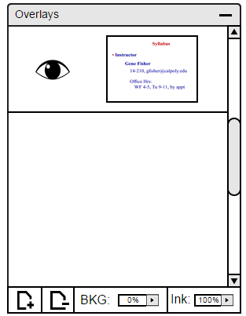
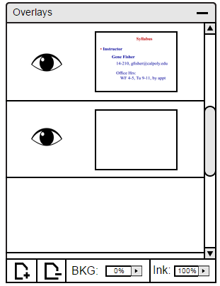

2.5.2.1. Adding a Layer
To add a layer to the panel, user clicks on the '+' button on the bottom left corner of the image presented in Figure 1. The layer is added under the last layer or under the slide, if there isno layers yet.

Figure 1: Main view.
Once the '+' is clicked, a new layer will appear on the panel as shown in Figure 2.

Figure 2: Added Layer view.
By using the drawing tool from the toolbar described in Section 2.5.1., the user can draw on the layer as shown in Figure 3.

Figure 2: Drawing on Layer.
Figure 4 displays another layer added to the panel with drawing on the new layer.

Figure 4: Drawing on 2nd Layer.
Prev: [none]
| Next: deleting-layer
| Up: layers
| Top: index